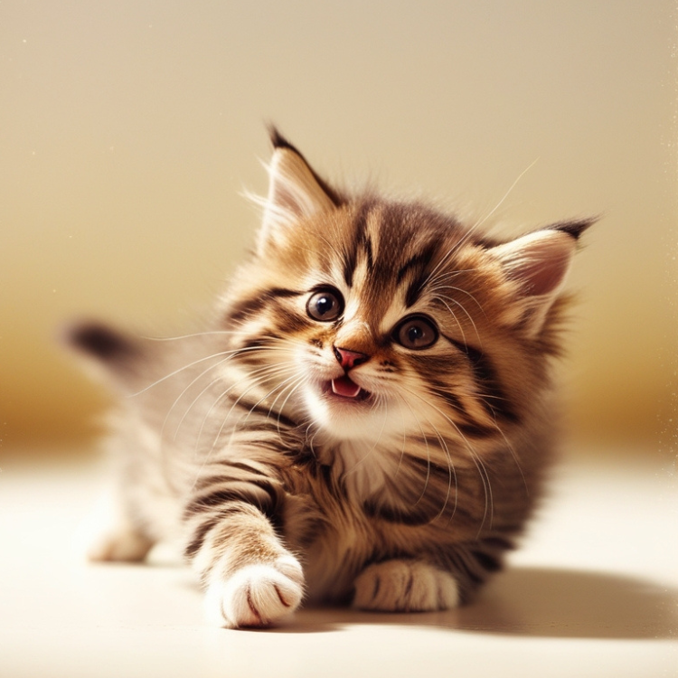

毛小孩專區
豪拜兒|貓咪體重過重？增強活動量的最佳策略與實用建議

當你發現貓咪的體重過重時，增加它們的活動量是非常重要的。肥胖會對貓咪的健康造成多方面的影響，包括增加患上關節炎、皮膚病、腎臟病和糖尿病的風險，甚至可能危及生命。如何判斷貓咪是否過胖，並有效地管理其體重？本文將幫助你了解貓咪的理想體重，並提供一些實用的體重管理建議。
如何判斷貓咪的體重？
- 肋骨感觸：輕輕觸摸貓咪的肋骨，應該能夠感受到但不容易看見。
- 腰身形狀：從上方觀察貓咪的腰部，應該有輕微的凹陷，而非平坦。
- 腰部曲線：從側面觀察貓咪，應能看到腰部與下腹的曲線。
- 行走狀況：貓咪走路時，腹部不應下垂或搖晃，顯示身體重心穩定。
即使體重在正常範圍內，但若貓咪的體態圓潤或肚子凸出，也可能存在肥胖問題。觀察貓咪的體態能更準確地評估其健康狀況。
貓咪體重管理建議
- 控制飲食：合理調整貓咪的飲食量，避免過度進食。選擇天然成分的零食，避免糖分過高的食品。
- 增加活動量：提供貓咪足夠的遊戲和運動空間，例如使用貓玩具或設置貓爬架。這可以促進貓咪的運動，幫助消耗卡路里。
- 定期健康檢查：每年至少檢查一次貓咪的健康狀況，包括體重、牙齒和毛皮等。
- 避免人類食物：不要讓貓咪攝取含糖和鹽分高的人類食物。
- 選擇合適的貓糧：選擇低碳水化合物且均衡營養的貓糧，根據貓咪年齡選擇合適的產品。
增加貓咪活動量的方法
提供多樣化的玩具
- 逗貓棒：吸引貓咪的注意力，刺激捕獵本能。
- 動物形狀的玩具：如老鼠、鳥等，讓貓咪進行追逐和捕捉。
- 自動玩具：如移動的雷射筆或旋轉的球，持續吸引貓咪的興趣。
設置貓爬架和貓跳台
- 貓爬架：提供不同層次的攀爬和觀察點，滿足探索欲。
- 貓跳台：設計多層次和多功能的跳台，提供跳躍和攀爬機會。
定期變換玩具和設施
- 玩具輪換：定期更換或重新安排貓咪的玩具，保持興趣。
- 更新設施：添加新型貓跳台或爬架，保持新鮮感。
確保安全
- 安全環境：確保玩耍環境安全，避免小物品或不穩固的設施。
- 監控活動：觀察貓咪活動情況，避免因過度遊玩受傷。
創造社交機會
- 與其他貓咪互動：若條件允許，可考慮飼養多隻貓咪，促進互動和遊戲。
挑選貓跳台的要點
- 尺寸：選擇高度至少160公分的貓跳台，以提供充足的運動空間。
- 材質：實木貓跳台耐用但價格較高；絨布貓跳台美觀但不易清潔；瓦楞紙材質便宜但損壞快。
- 貓咪年齡：對於活力強的貓咪，選擇穩固的貓跳台；對於年老貓，選擇階梯式跳台以降低跳躍負擔。
推薦產品
通天柱貓跳台 點我購買

通天柱貓跳台是一款專為喜愛攀爬和探索的貓咪設計的高品質貓跳台。這款跳台提供了充足的運動空間，對於不同體型的貓咪都能提供合適的支持。以下是一些產品特點：
- 高度可調：可調整高度設計，適合房間高度在235-300公分範圍內的家庭。提供靈活的安裝選擇，滿足不同居住空間的需求。
- 穩固結構：使用12公分加粗PVC柱，結構更穩定，防止在貓咪活躍時倒塌。底座寬40x40公分，增加穩定性，確保安全。
- 耐用材質：主要材料為松木實木板，配合PVC柱和劍麻表面，耐磨損且易於清潔。特別適合貓咪的抓挠需求。
- 多功能設計：包括多層木板平台和高處觀景點，滿足貓咪的跳躍和觀察需求。頂部的液壓桿選配更安全，防止意外損壞。
- 個性化選擇：可選擇附加配件如貓咪吊床和貓太空艙，提供更多休息和娛樂的選擇。
寵物錄音按鈕 點我購買

寵物錄音按鈕是一款有趣且實用的互動產品，旨在增進你與貓咪的交流。以下是一些產品特點：
- 互動設計：按鈕設計簡單易用，貓咪可以輕鬆按下按鈕，與主人增加互動樂趣。
玩具或貓抓板 點我前往HeyMaster
若您希望為貓咪添購更多玩具，HeyMaster 將是您的首選。它專注於各類貓咪玩具，讓您的貓咪玩得開心。我們在之前的文章中，也提及過一些優質的寵物店家，各位讀者也可以到之前的文章看看。點我前往"養貓必備物品清單"文章
更多文章
想要更深入了解貓咪的習性和如何照顧牠們嗎？請點擊以下連結閱讀更多相關文章。點我前往更多文章